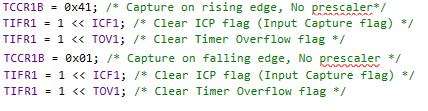

LABSI
2017/2018
Autores:
Jorge Afonso Barandas Queirós (Nº 1151410)
1151410@isep.ipp.pt
Francisco de Brito Vasconcelos
(Nº 1150947)
1150947@isep.ipp.pt
No âmbito da disciplina "Laboratório de Sistemas", foi proposto construir um protótipo como trabalho final em que o requisito mínimo era um led a piscar à frquência de 1 HZ.
Após alguma discussão, análise e planeamento, escolhemos desenvolver (pela interatividade proporcionada) um veículo autónomo (AGV – "Automatic Guided Vehicule") que integrasse três tipos de aparelhos / sensores principais:
• TCRT5000L : deteção da linha;
• HC-SR04 : sonar ultrassónico para deteção de obstáculos.
• HC-05 : módulo Bluetooth para comunicação RS-232 com o AGV(envio e receção de dados).
Antes de atingirmos uma fase final e já de conclusão, todo o processo foi envolvido em extensos períodos de pesquisa, montagem, programação e testes. Todos estas etapas serão descritas ao longo deste relatório.
Fig. 1 - AGV : Valter
Durante todo o crescimento e desenvolvimento do projeto, de modo a garantir o cumprimento de todos os objetivos por nós propostos, foi necessário planear, organizar e controlar todas as etapas distintas. Foi assim criada e implementada a arquitetura de sistema que melhor proporcionasse a harmonia entre todas as células que o constituíam.
Fig. 2 - Arquitetura do sistema
Como podemos analisar, o microcontrolador é o centro do sistema, é onde toda a informação dos sensores de linha, do módulo bluetooth e ultrassom é recebida e processada por ele, com posterior tomada de decisão conforme o programado. Para cada situação, tanto as leituras dos sensores como o modo de atuação do microcontrolador será diferente e apropriado ao problema, incorporando uma simultânea atualização do LCD.
Numa zona mais lateral do sistema surge a "ponte H" (L298N), sendo esta essencial pois constrói o elo de ligação e comunicação entre os motores e o microcontrolador. Como sinalização e requisito obrigatório, paralelamente ao sistema principal, o microcontrolador estará a controlar um LED gerando uma onda quadrada de 1 Hz.
O nosso protótipo apresenta 3 estados de funcionamento: Seguidor de Linha, SmartRobot (evita obstáculos) e ControloRemoto via Bluetooth. Estes 3 funcionamentos são distinguidos pelo microcontrolador através de um interruptor de 3 estados . Este , consoante a sua posição, informa o AGV sobre a funcionalidade pretendida.
Fig. 3 - AGV : Interruptor 3 estados
Além de o microcontrolador poder decidir sozinho o que processar, mediante um programa desenvolvido por nós no MIT APP Inventor, AGVControl, conseguimos escolher o funcionamento desejado e também controlar o carro remotamente, como se fosse um carro telecomandado. Trataremos de aprofundar este tema mais à frente no relatório, na zona de Software
Circuito de alimentação com regulador [1]
• Pilha 8V Futaba 2200MAh , uma pilha com uma boa capacidade, é usada para alimentar o microprocessador;
• Pilhas 4*1.5V, usadas para alimentação dos motores DC;
• Regulador de tensão 78L05 smd : Mantem à sua saída uma tensão constante de 5V;
• Condensadores : Eliminação de ruídos das tensões de entrada e saída do 78l05 smd;
Fig. 3 - Regulador de Tensão
Sensores
• 3 sensores TCRT5000L [2] : Sensor que inclui um emissor de infravermelhos e um fototransístor que bloqueia a luz visível.
Fig. 4 - TCRT5000L
O sensor irá funcionar segundo os seguintes parâmetros:
→ O LED é acionado quando recebe uma tensão, emitindo um feixe de luz infravermelha ;
→ O fototransístor ativa a sua base quando recebe um feixe de luz infravermelha. Quando este encontra um objeto refletor, recebe a luz do LED refletida, onde o transístor irá conduzir a corrente entre o coletor e o emissor. No caso de o objeto não ser refletor, o fototransistor não irá ativar a sua base porque não irá receber a luz do LED refletida, não conduzindo corrente.
Fig. 5 - Circuito TCRT5000L
• HC-SR04 [3] : Este integrado inclui transmissores de ultrassom, receptor e circuíto de controlo.

Fig. 6 - HC-SR04
O sensor irá funcionar segundo os seguintes parâmetros:
→ Um trigger é utilizado para, pelo menos, 10us de sinal com nível ascendente;
→ Após o sinal de trigger terminar, o integrado envia automaticamente oito pulsos de 40 kHz;
→ Após os oito pulsos serem enviados, o integrado coloca o pino respetivo do "echo" a 5V (flanco ascendente);
→ Se o sinal enviado encontrar um obstáculo, refletirá e voltará para trás sendo intercetado pelo receptor, efetuando a mudança de valor, no pino respetivo do "echo", de 5V para 0V (flanco descendente);
→ A distância será determinada pela seguinte fórmula :
Fig. 7 - Funcionamento HC-SR04
Motor DC
• TT Motor for Arduino Smart Car [4] : O microcontrolador, juntamente com a ponte H, irão controlar a velocidade e direção do motor DC.
Fig. 8 - TT Motor for Arduino Smart Car
Circuito Principal
• Microcontrolador ATMEGA324p [5] : Todo o controlo do AGV será efetuado pelo microcontrolador que irá processar a informação que recebe dos sensores e tratá-la de acordo com o software programado atuando por PWM nos motores variando a sua velocidade;
Fig. 9 - Pinout ATMEGA 324P
• 2 Condensadores : Eliminação de ruídos;
• LED RGB, a piscar à frequência de 1 Hz;
• Ponte H - L298N [6] : Controlo, independente, da direção e velocidade dos motores. A principal funcionalidade do driver é elevar a corrente de saída do microcontrolador,para dar aos motores ordem de aceleração, porque esta sai com um valor muito baixo(na ordem dos 0.02 A)
Fig. 10 - Driver L298N
Circuito de Interface
• LCD 16x2 [7] : Irá efetuar o display de informação processada pelo microcontrolador, contento sinalizações dos vários sensores, assim como o valor de PWM presente nos motores e o modo de funcionamento em que se encontra;
Fig. 11 - LCD 16*2 no AGV
Fig. 12 - LCD 16*2
• 1 Interruptor de 3 estados : Cada estado define um modo de funcionamento:
→ Modo 1: Seguidor de Linha
→ Modo 2: ControlaBluetooth
→ Modo 3: SmartRobot(Evita obstáculos)
Ambos os modos possuem no LCD a informação sobre o estado das baterias dos motores, e mais à frente, na zona de Software ,
iremos provar como é que lidamos com a velocidade dos motores em função da bateria.
• 1 Módulo Bluetooth HC-05 : Capaz de receber e enviar informação sobre o microprocessador, de modo a obter uma melhor interação entre o AGV e o utilizador.
Fig. 13 - Módulo Bluetooth HC-05
Fig. 14 - Interface
Esquemático do circuito
• A placa PCB foi desenhada segundo o seguinte esquemático de ligações elétricas.
Fig. 15 - Esquemático
Circuit board
• A placa foi desenhada com auxílio do software "KiCad". Foi usada uma placad picotada Arduino. O maior motivo de termos feito esta placa é a robustez, algo que não havia com uma breadboard, assim como uma melhor organização dos componentes e eliminação de muitos fios, que se podiam soltar ou mesmo causar confusão e mau aspeto a quem vê o circuito.
Fig. 16 - Placa Real( Feita em casa com uma placa picotada)
Fig. 17 - Placa Virtual(PCB-Printed Circuit Board) , feita no KiCad
Neste capítulo vamos analisar todo o software utilizado para o funcionamento do projeto.
Inicializações
• Na zona de inicialização , temos a função inic(). Esta trata de definir os I/O´s , configurações de timers, para os motores e sonar, define a entrada analógica que vai medir a tensão das baterias dos motores, inicializa o LCD e por fim a função srand, que vai criar números aleatórios para uma parte do código que vamos analisar mais à frente, na zona da função do nosso AGV, FogeParedes().
Fig. 18 - Inicializações
• Seguidamente temos as variáveis globais utilizadas. O objetivo do uso de cada uma está explicada na fotografia em baixo.
Fig. 19 - Variáveis Globais e a sua explicação
• Os pinos que controlam a direção de rotação(2 pinos a cada motor) e a velocidade dos motores(OCR2A e OCR0B) são inicializados como saídas e ligam à ponte H.
Fig. 20 - Pinos do Motor
• O LCD foi inicializado com : LCDInit(). Os parâmetros da função são o piscar do LCD e o traço que aparece debaixo da 1ª quadrícula. Estas funções relativas ao uso do LCD são invocadas pelo ficheiro "LCD.h" , e esta foi retirada da Internet , do site
LCD EXTREME ELETRONICS
• O Timer1, inicializado fora do inic(), foi utilizado para contar o tempo do sonar de forma a que interrompe-se o programa o mínimo de vezes possível.
Juntamente com a inicalização do timer, também utilizamos flags auxiliares do timer, que se situam no registo TIFR ( Time Interrupt Flag Register), e as flags são :
• ICF(Input Capture Flag)
• TOV(Timer Overflow Flag)
Estas flags limpam-se a 1 ,e não a 0 como de habitual, e dizem ao programa quando é que o Timer pode capturar o tempo de subida e descida da onda e também quando é que existe um overflow do Timer1.

Fig. 21 - Configuração do Timer1
Convém salientar que , para capturar o tempo de subida e descida é preciso reconfigurar o timer, mudando o TCCR1B, e assim atualizar a flag ICR(Input Captur Register) , que tem como função armazenar o tempo de descida (echo ativo)
No nosso caso, usamos uma interrupção do tipo OVF, que sempre que o Timer1 chega aos 65536, TimerOverFlow incrementa , e assim conseguimos medir a distância do sonar relativamente ao obstáculo.
Fig. 22 - Timer1 OVF Interrupção
• O pino do "echo" do sonar é ligado a PD6, sendo que este corresponde ao pino do ICP( Interrupt Capture Pulse) . Este pino é responsável por medir a largura de um impulso , neste caso vai medir a do sonar.
Foi utilizado esse pino porque ele é capaz de detetar todas as mudanças de flanco neste pino, de forma a que seja possível contar o tempo desde o momento em que são emitidos os pulsos de ultrassom pelo sonar (flanco ascendente) até que este os volte a receber após terem sido refletidos por um obstáculo (flanco descendente).
• USART0(Universal Synchronous Asynchronous Receiver Transmitter) , foi utilizado para a interação entre microcontrolador e telemóvel, via Bluetooth, protagonizado pelo HC-05. Este registo é muito poderoso,e bem configurado, proporciona uma boa relação entre utilizador e máquina.
Para configurar este registo, foi preciso definir uma Baud Rate (9600) , síncrono, sem bit de paridade, com 8 bits de dados e com 1 stop bit. Esta configuração é feita na função usart_init():
Fig. 23 - Configuração da USART
• O ADC (Analog-to-digital Converter), foi utilizado para a leitura da tensão da bateria 4*1.5V utilizando o canal ADC0. O resultado da conversão foi ajustado à esquerda, de forma a que se possa ler os 8-bits mais significativos do resultado da conversão (ADCH), obtendo assim uma leitura com 8-bits de resolução (sendo neste caso suficiente para o efeito).
Fig. 24 - Configuração do ADC
Função Principal - main()
• O programa inicia na função "main()". Antes de tudo, fazemos um delay de 1s, para establizar o início do sistema, pois desta maneira concluimos que a probabilidade de haver "bugs" é menor. De seguida, chama-se a função das inicializações (que já foram referidas detalhadamente anteriormente). Antes do ciclo, é feita mais uma chamada, neste caso, à função ControlaBluetooth(). Esta função vai configurar a USART0 e vai inicialiazar a comunicação RS-232, em que vamos poder comunicar com o ATMEGA. Para efeitos de teste, antes de controlar o AGV, enviamos uma SMS via Bluetooth, um terminal Android, para confirmar que a comunicação está a ser bem sucedida:
Todas as funções inseridas na fotografia em baixo foram usadas no intuito de estabelecer a ligação entre o ATMEGA e o Telemóvel, logo inserem-se como comandos da função ControlaBluetooth(). Daí serem funções universais, em que a usart_init() apenas configura a USART0 . A função usart_data_transmit(unsigned char data) tem como função armazenar ,na string de transmissão e receção de dados, caracteres, enquanto o pino UDRE0(Usart Data Register Empty) pertencente ao registo UCSR0A estiver desativado, ou seja, há algo no vetor para ser transmitido.
As outras funções são usadas para controlo caracteres e strings, antes e durante o envio de informação.
A função ControlaBluetooth() fica então como na Figura 27:
Fig. 25 - Funções/Comandos da ControlaBluetooth()
Fig. 26 - Terminal Android de comunicação Bluetooth
Fig. 27 - ControlaBluetooth()
• Entramos agora no ciclo - while(1). A primeira coisa a fazer é achar o valor lógico dos pinos de entrada PB0 e PB1, pinos estes que ligam ao interruptor de 3 estados. É de salientar que esta verificação tem que ser frequente, porque o valor deverá ser atualizado sempre que mudar-mos a posição deste componente. Por isso é que é obrigatório tê-la no início do ciclo, ou seja, o progerama reinicia sempre a sua rotina verificando o estado do interruptor para saber o que irá fazer.
Fig. 28 - Averiguação do estado do interruptor
De seguida, temos a chamada da função lerad(), função que converte a tensão das baterias do motor para um valor digital, lido no ATMEGA, e de seguida este valor é impresso no LCD, de modo a obter uma noção do estado das pilhas. Este valor é convertido para o ADCH, porque estamos a usar só a parte alta da conversão de 10 bits, e de seguida aplicamos uma fórmula para calcular a tensão real. O divisor de tensão para ler a voltagem foi feito para à entrada do micro ter uma tensão de 3 volts máximo, então como as pilhas são de 6v, quando a tensão é 3 , multiplicamos por 2. Portanto, a medição é feita para metade da voltagem real.
Fig. 29 - lerad() e impressão da tensão
Chegamos agora ao "cérebro" do nosso AGV: A fase em que ele em função do estado do interruptor vai decidir o que fazer.
•Se este estiver no estado 1(PB0 a 0 e PB1 a 1) vai executar o Modo "SegLine".
•Se estiver no estado 3(PB0 a 1 e PB1 a 0) vai executar o Modo "SmartRobot".
•Se ambos os pinos forem 1, este executa o "BT Control".
→ Modo "Segline" - neste modo o veículo está preparado para realizar um percurso com início e fim. O carro apresenta inteligência para quando deixa de sentir os sensores a detetar preto, e também quando acaba a pista, e então sabe como proceder em ambos os casos. Também apresenta variacôes de velocidade em relação à voltagem dos motores e do estado dos sensores. Vamos falar como isso funciona mais á frente, na função Sensor().
Fig. 30 - Segline
→ Modo "SmartRobot" - neste modo o veículo anda aleatoriamente pelo chão, e quando deteta um obstáculo, evita-o, virando para um lado ou para o outro, também de uma forma aleatória. Neste modo também existe variação de velocidade, para uma melhor precisão de movimentos. Falaremos também disto mais à frente, na zona da função FogeParedes(). ,

Fig. 31 - SmartRobot
→ Modo "BT Control" - neste modo, é possível com o auxílio de uma aplicação feita por nós, no MIT APP Inventor, executar todas as tarefas propostas pelos restantes estados do interruptor, e também existe a opção de controlar o carro remotamente, tal e qual como um carro telecomandado. Falaremos disto mais detalhadamente, mas fica aqui uma fotografia da nossa aplicação, capaz de executar todas as intruções previamente faladas.
Fig. 32 - BT Control
Fig. 33 - APP AGVControl
Para se verificar constantemente o estado do interruptor, o nosso ciclo é formado por 3 condições iniciais, e são estas que definem qual o funcionamento a usar.
Fig. 34 - Condições gerais
Começando a analíse da função principal da main:
•Estado 1: SegLine
Fig. 35 - Código Segline
Podemos começar por ver que temos 3 contadores no início: apagarlcd1, apagarlcd2, apagarlcd3. Estas variáveis são à vez incrementadas aquando da escolha do interruptor. Só incrementam uma vez, e servem para atualizar a informação escrita no LCD. Limpam os dados anteriores e acresentam nova informação sobre o que está a ocorrer. Neste modo aparece o nome do funcionamento, a tensão da bateria dos motores e também a cor que os sensores de linha estão a detetar(preto ou branco).Quando se muda de posição no interruptor, as variáveis do LCD são limpas para poder atualizar novamente o LCD.
De seguida é chamada a função Sensor(), e esta vai tratar de analisar os valores lógicos dos sensores InfraVermelho e decide o que fazer ao AGV.
Fig. 36 - Sensor()
Esta função o que faz é analisar constantemente o estado do sensores de linha da seguinte maneira:
Fig. 37 - Estado TCRT5000L
De seguida, com esses valores(0-Branco;1-Preto), vai verificar um conjunto de condições. Estas são:(Sensor Esquerda/Sensor Meio/Sensor Direita)
→ 111 - Os sensores detetam todos preto. O AGV vai ser movido com velocidade máxima , e em caso de cruzamento ele segue sempre em frente.
→ 010 - O sensor do meio é o único em cima da linha. O AGV vai ser movido a uma velocidade mais baixa, de modo a percorrer o circuito com melhor precisão. Além disso, existe uma relação de velocidade com potência dos motores. Se a tensão das pilhas for inferior a 5.5 V, o AGV vai ser sujeito a uma maior velocidade(PWM do motor), e se a tensão for superior, a velocidade imposta vai ser menor. Assim vai haver um equilíbrio de velocidades,pois regulamos a tensão imposta nas rodas em relação à disponibilidade de energia do motor DC.
Esta regulação de velocidade está presente em todos os restantes casos.
→ 011 - É realizada uma curva fechada para a direita ,ou seja, é enviado um sinal de comando para a roda esquerda andar para a frente e para a direita andar ao contrário, assim o carro irá virar mais rápido. Este caso aplica-se com curvas de 90º. A variável "estadoanterior=2" servirá para um caso que será posteriormente explicado.
→ 110 - É realizada uma curva fechada para a esquerda ,ou seja, é enviado um sinal de comando para a roda direita andar para a frente e para a esquerda andar ao contrário, assim o carro irá virar mais rápido. Este caso aplica-se com curvas de 90º.A variável "estadoanterior=3" servirá para um caso que será posteriormente explicado.
→ 100 - É realizada uma curva mais leve do que a anterior, também para a esquerda. Neste caso o único sensor a detetar preto é o da esquerda, então ele ajusta o carro de volta a pista, porque naquele momento o AGV está no lado direito dela. A variável "estadoanterior=5" servirá para um caso que será posteriormente explicado.
→ 001 - É realizada também uma curva mais leve,mas para a direita. Neste caso o único sensor a detetar preto é o da direita, então ele ajusta o carro de volta a pista, porque naquele momento o AGV está no lado esquerdo dela. A variável "estadoanterior=4" servirá para um caso que será posteriormente explicado.
→ 000 - Todos os sensores detetam branco. Neste caso o AGV vai precisar de usar um auxiliar de memória, presente na variável "estadoanterior".
• Se esta for 2 ou 4, o carro vira para a direita.
• Se esta for 3 ou 5, o carro vira para a esquerda.
Esta variável é uma das grandes virtudes do nosso projeto, pois guarda informação sobre o historial do movimento do AGV, e em situações de perda de orientação ou de final de trajeto consegue voltar à pista de uma forma bastante fluída.
•Estado 2: SmartRobot

Fig. 38 - Código SmartRobot
• Neste funcionamento, o início do código é bastante similar, porque existe um excerto de código onde atualizamos a informação do LCD com recurso às variáveis auxiliares acima referidas.A informação impressa neste caso será na mesma a tensão dos motores, "SmartRobot" e a distãncia que o AGV se encontra do obstáculo adiante.
De seguida, como ciclo , são chamadas as funções Sonar() e FogeParedes(), funções estas que vão evitar que o carro colida contra os obstáculos.
.
•Função Sonar(), responsável então por medir a distância entre o AGV e o obstáculo:
Fig. 39 - Código Sonar
•A primeira instrução é certificar que o pino do trigger está a 0, e depois, durante 10 microssegundos, enviar 8 pulsos de 40 kHz, e voltar a desabilitar o pino de saída do ATMEGA. Na entrada, echo, vamos medir a distância usando o ICP(Input Capture Pulse). Este pino mede o comprimento do pulso , que se encontra no falling edge da onda temporal do código, pertencente ao Timer1.
Para isso,segundo o código, é necessário reconfigurar o TCCR1B, porque no início ele está pronto a capturar o trigger , mas agora é preciso capturar o echo, então usa -se o valor 0x01(capturar o flanco descendente). Limpa-se o TCNT1, limpa-se as flags relativas ao pino ICP : TOV(Timer Overflow Flag) e ICF(Input Capture Flag), e enquanto a onda estiver a descrescer, é incrementar ao count o valor do ICR1( que é o valor do TCNT1) mais 655345* TimerOverFlow(número de vezes que existe overflow ajuda a contar o tempo do pulso).
A distância é calculada por : velocidade do som*tempo, em que o tempo é igual ao tempo de pulso mais o tempo de intrução do programa no ATMEGA, e daí segundo cálculos, arredondar-mos para count/446.47.
•Função FogeParedes(), responsável por guiar o carro em função da distãncia medida no Sonar :
Fig. 40 - Código FogeParedes()
• Nesta função, são impostas 3 condições:
→ Distância maior que 60cm;
→ Distãncia entre 60cm e 30 cm;
→ Distância menor que 30 cm.
• No 1º caso, o carro anda á velocidade máxima, sem restrições em relação à bateria dos motores,sempre em frente.
• No 2º caso, o carro anda com velocidade reduzida pois aproxima-se de um obstáculo.
• No 3º caso, o carro encontra-se a 30cm ou menos de um obstáculo. O procedimento neste caso é parar o carro e virar, de modo a da próxima leitura do sonar, ele não detetar obstáculos. O lado para qual ele vai seguir é definido pela condição em que se gera um número aleatório, e se ele for par, vira para a direita, senão vira para a esquerda. O ciclo definido dentro das condições foi calculado para o carro realizar uma curva de 90º aprox..
Para concluir este funcionamento, é de realçar que nem sempre o sonar é necessário, devido à qualidade do mesmo. Mas na maior parte dos casos, existe uma boa medição da distância e o AGV comporta-se bem quando é preciso mudar de direção.O facto de a rotação ser aleatória faz com que o carro enquanto deteta obstáculos consiga "sentir" qual o melhor caminho a tomar, porque em certos casos , quando ele por exemplo vira à direita, se continuar a detetar o obstáculo, há forte probabilidade da próxima movimentação ser para a esquerda, e se desse lado não houver impedimento, o carro pode prosseguir o seu movimento, tornando o carro muito inteligente nesse aspeto.
•Estado 3: BT Control
Fig. 41 - Código BT Control
Este funcionamento é o mais interativo e completo de todos. Baseia-se em usar os 2 funcionamentos já falados,e acrescenta uma nova funcionalidade: controlo do carro remoto, tal como se o telemóvel fosse um comando.
A aplicação desenvolvida por nós tem 5 botões na zona de cima, e 2 em baixo:
Fig. 42 - APP
• Na zona a vermelho , é a zona remota do AGV, onde pelas condições é possível movimentar o AGV. Se o UDR(Usart Data Receiver) enviado pela aplicação para o HC-05 for:
→ F: Anda para a frente enquanto o botão da seta para cima estiver premido
→ R: Anda para a direita enquanto o botão da seta para cima estiver premido
→ L: Anda para a esquerda enquanto o botão da seta para cima estiver premido
→ B: Anda para trás enquanto o botão da seta para cima estiver premido
→ S: Para o carro quando está a ser executado os funcionamentos da caixa verde
• Na zona a verde , situa-se botões para as funcionalidades restantes, atuando a aplicação como um interruptor.
→ 1 : Modo SegLine
→ 2 : Modo SmartRobot
• Na app, os botões foram configurados como "On-Click" , e na caixa verde, as condições são feitas por ciclos condicionais(while) para que quando o funcionamento estiver ativo e for carregado no Stop, o AGV fica parado á espera de instruções .
• Comprovando pelo código, todos os funcionamentos apresentam uma componente bastante similar. Trata-se do excerto que controla o LED. Usamos 3 varíaveis capazes de contar 500 milissegundos: "contadorled1","contadorled2","contadorled3". Os valores destas varíaveis, para cada caso, foram calculados com ajuda do Simulador do Atmel , e foram alterados até que o programa entrasse na condição passados cerca de 500ms. Os valores das variáveis para cada funcionamento mudam pois nem todos tem o mesmo tempo de processamento desde do início da iteração até que o valor iguale de modo a que entre na rotina do LED.
Caso 1:
Fig. 43 - Caso 1 LED
Caso 2:
Fig. 44- Caso 2 LED
Caso 3:
Fig. 45 - Caso 3 LED
Nota: Mudamos os valores do caso 1 e caso 2 para 550 e 35 respetivamente para obter uma melhor precisão, e assim o LED pisca a sensívelmente 1Hz.
O produto final obtido deste trabalho pode ser demonstrado nos seguintes modos de funcionamento:
• Vídeo onde com o telemóvel controlamos todos os estados, inclusive os estados 1 e 2 do interruptor
Terminado o trabalho, conseguimos entender que os objetivos a que nos propusemos foram atingidos e o produto final ficou de acordo com o esperado. O AGV responde bastante rápido às diversas situações e permite ao utilizador uma grande interação através da aplicação Bluetooth. Apesar do resultado final ser o esperado existem pequenas falhas como é o caso do sonar, que por vezes faz leituras erradas, detetando obstáculos onde eles não existem. Como os restantes modos de funcionamento não causaram grandes impasses (modo seguir linha e modo Bluetooth), conseguimos disponibilizar mais tempo à construção física do protótipo (numa placa perfurada) o que tornou o AGV mais resistente.
A realização deste trabalho deu-nos a oportunidade de obter conhecimentos sobre hardware e programação quer a nível de sensores quer a nível do módulo Bluetooth. Como ao longo do semestre os resultados foram os pretendidos, o projeto tornou-se bastante cativador.
[1] "Ebay, Reguladores de Tensão", https://www.ebay.co.uk/itm/L78xx-Serie-Positive-Voltage-Regulator-IC-5V-9V-10V-12V-15V-18V-24V/200714883555?hash=item2ebb8a11e3:m:mQsEgarAIPlqhRUm2EUIbEA
[2] "TCRT5000L Datasheet", http://www.vishay.com/docs/83760/TCRT5000L.pdf
[3] "HC-SR04 Datasheet", http://www.micropik.com/PDF/HCSR04.pdf
[4] "TT Gear Motor 3-12V DC 70mA For Arduino Smart Car", https://www.ebay.co.uk/itm/TT-Gear-Motor-3-12V-DC-70mA-For-Arduino-Smart-Car-Robot-65-22-mm-wires-cables/232565542248?hash=item3625fc8d68:m:mfpLOTa4zkb_scTh9kUPQTA
[6] "LCD 16x2 Tutorial", http://www.electronicwings.com/avr-atmega/interfacing-lcd-16x2-in-4-bit-mode-with-atmega-16-32- <
[7] "HC-05 Datasheet", https://www.gme.cz/data/attachments/dsh.772-148.1.pdf